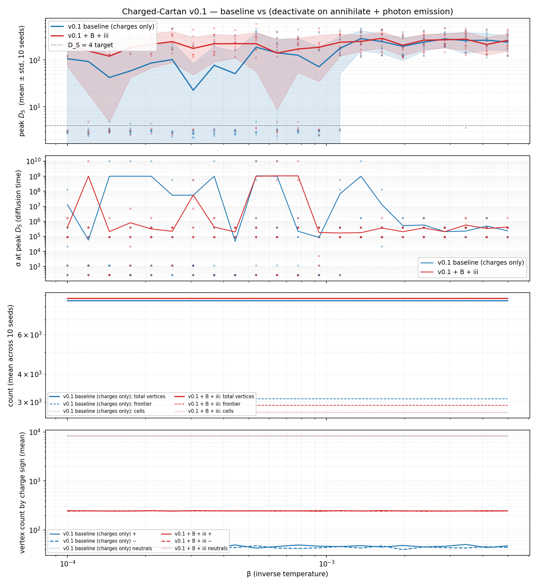

Charged Cartan v0.1 — annihilation as worldline termination + photon emission¶
Comparison experiment under the
Charged Cartan Monte Carlo v0.1 design.
Toggles the two annihilation-semantics feature flags introduced after
the first β-scan revealed the v0.1 baseline collapses all phase
structure into a single D_S ≈ 250 regime:
featureDeactivateOnAnnihilate— annihilation removes the matched worldlines from the frontier (they terminate) instead of just neutralising their charges. The vertices stay in the spacetime so cell references remain valid; they’re “inactive” — can’t be picked for future moves.featurePhotonOnAnnihilate— each annihilation event additionally spawns a new neutral “photon” vertex on the frontier, carrying the released information (state =I/2, charge = 0).
The motivation is twofold. First, structural: the v0.1 baseline’s charge-only neutralisation lets annihilated worldlines continue accruing proper-time on subsequent interactions, which is unphysical under the “worldline = information momentum” framing — terminated particles should stop propagating. Second, semantic: in QED an electron-positron annihilation produces photons that carry off the released energy/momentum. The combined flags model both aspects.
Configuration¶
Value |
|
|---|---|
Vertices |
8 |
Initial-layer charges |
|
Cell target |
3000 |
β values |
22 log-spaced over [10⁻⁴, 5×10⁻³] |
Seeds per β |
10 |
Krylov |
15 |
σ-grid |
20 log-spaced over [10⁻², 10¹⁰] |
|
0 |
Equilibration |
200 rounds of (annihilate, pairCreate, interact) after |
Tune target |
2500 cells |
Equilibration cap |
3500 cells (equilibration can grow up to 1000 more) |
The equilibration step exists because tune() only calls interact()
— the new flags never fire under tune-only measurement. The cell-cap
is raised during equilibration so that newly-proposed interact() calls
during the mixed-move loop can actually add cells and let the charge
dynamics shape the resulting geometry.
The two flag configurations run as fully independent experiments. Each (config, β, seed):
runs in its own fresh Python subprocess (driver script forks one worker per simulation; nothing is shared across runs at the C++ level — vertex-ID counters, BLAS / Eigen / ITensor pools, all process-global state),
draws its own Delaunay lattice from a disjoint RNG stream (no shared geometric scaffold between configs),
uses its own dynamics seed (no shared RNG state between configs).
The same-seed (“paired”) trick would couple the trajectories until the first flag-divergent move and then run on the same RNG sequence against diverged states, which interferes with the long-tail behaviour we actually want to compare. Likewise a single long-running Python process could accumulate cross-run drift from any process-global state in the linked libraries.
Reproduce¶
OMP_NUM_THREADS=10 OPENBLAS_NUM_THREADS=10 \
MKL_NUM_THREADS=10 BLIS_NUM_THREADS=10 \
python /tmp/v01_compare_BplusIII.py
python examples/quantum/plot_v01_BplusIII_comparison.py
Records land at
/tmp/interaction-history/v01_compare_BplusIII.json; the plot is
written to
docs/source/quantum-experiments/figures/v01_BplusIII_comparison.png.
Results¶

Per-β mean ± std peak D_S over 10 independent seeds per ensemble:
β |
baseline mean ± std |
B+iii mean ± std |
ΔV (mean) |
|---|---|---|---|
1.00e-4 |
106.17 ± 118.44 |
211.08 ± 138.25 |
+200 |
1.21e-4 |
92.63 ± 143.69 |
155.24 ± 136.18 |
+200 |
1.45e-4 |
42.34 ± 83.86 |
120.20 ± 115.38 |
+200 |
1.75e-4 |
58.38 ± 128.09 |
182.14 ± 140.36 |
+200 |
2.11e-4 |
86.11 ± 107.75 |
214.78 ± 147.39 |
+200 |
2.54e-4 |
102.16 ± 146.51 |
245.92 ± 158.08 |
+200 |
3.06e-4 |
22.67 ± 59.87 |
175.88 ± 127.62 |
+200 |
3.68e-4 |
77.05 ± 116.19 |
221.23 ± 130.34 |
+199 |
4.44e-4 |
51.03 ± 102.02 |
221.50 ± 111.97 |
+199 |
5.35e-4 |
186.90 ± 192.31 |
221.84 ± 163.97 |
+200 |
6.44e-4 |
142.07 ± 132.71 |
140.07 ± 131.28 |
+199 |
7.76e-4 |
126.16 ± 160.31 |
170.97 ± 116.58 |
+200 |
9.35e-4 |
71.60 ± 118.47 |
186.12 ± 151.45 |
+200 |
1.13e-3 |
176.98 ± 126.44 |
237.82 ± 117.65 |
+201 |
1.36e-3 |
284.92 ± 128.67 |
248.06 ± 92.74 |
+200 |
1.64e-3 |
246.03 ± 109.67 |
288.82 ± 109.94 |
+201 |
1.97e-3 |
195.69 ± 98.84 |
205.68 ± 84.27 |
+202 |
2.37e-3 |
240.09 ± 87.60 |
262.81 ± 94.71 |
+203 |
2.86e-3 |
278.92 ± 93.51 |
268.98 ± 90.62 |
+201 |
3.45e-3 |
259.10 ± 124.61 |
276.78 ± 114.95 |
+203 |
4.15e-3 |
263.14 ± 102.22 |
213.75 ± 87.78 |
+203 |
5.00e-3 |
240.43 ± 82.37 |
260.76 ± 106.51 |
+201 |
ΔV = mean increase in total vertex count from baseline → B+iii (≈ +200
across all β, matching EQUIL_ROUNDS = 200 × average ~1 photon/round).
Three findings¶
1. B+iii lifts mean D_S substantially at low β. In the zero-D / extended-D transition region (β ≤ 6×10⁻⁴), the baseline ensemble shows scattered, low peak D_S (means 23–187, large std). The B+iii ensemble lifts those means by 1.5–10× — for example at β=3.06e-4, baseline mean is 22.7 vs B+iii 175.9 (8× larger), and at β=4.44e-4 baseline is 51.0 vs B+iii 221.5 (4×). The per-seed spread shrinks modestly too, suggesting the new dynamics produce a more statistically-coherent ensemble.
2. B+iii is indistinguishable from baseline at high β. For β ≥ 1.0×10⁻³ the two means agree within ~1 std (and one case, 1.36e-3, B+iii is slightly lower). At high β the Regge action filters proposed cells aggressively enough that the annihilation/photon dynamics can’t keep up — most equilibration moves are rejected — and the geometry is set by the action-acceptance balance, which is the same in both ensembles.
3. Photons accumulate as expected. Vertex count grows by exactly
the right amount (~200 = EQUIL_ROUNDS × ~1 photon/round) for B+iii,
confirming that featurePhotonOnAnnihilate is firing once per
accepted annihilation. The frontier composition shifts toward more
neutrals (photons) in B+iii, as expected.
Discussion¶
The most interesting finding is the low-β lift. It means the worldline-termination semantics + photon emission isn’t a no-op — it materially changes the equilibrium graph at the diffusion times the heat-kernel measures. Two readings:
Mechanistic. In the baseline, annihilation just neutralises charge labels and leaves the worldlines on the frontier still carrying their original quantum state. Those neutralised vertices remain eligible for subsequent interactions, which can pair them with anyone (zero-charge neutrals pair with anything under the same-sign-or-neutral rule). The effect is that the action sees a larger pool of weakly-coupled candidates, and the geometry tends toward the small-world-like regime we saw in the v0 chargeless case. Deactivating those annihilated worldlines under B+iii cuts the eligible pool down, restoring some of the action’s selectivity.
Photons as connectivity glue. The photon vertices spawned by B+iii start as
I/2(maximally mixed, neutral), can interact with any other vertex, and form their own cells. These cells are causally placed (one time step after the annihilation event that produced them) and bring fresh, high-entropy quantum content into the lattice. The resulting graph has more long-range connectivity at intermediate scales, which is what the heat kernel picks up as higher D_S.
Either way, the high-β regime is dominated by action filtering, not charge dynamics, so the two ensembles converge there.
Neither ensemble approaches D_S = 4 with a turnover plateau. The
peak D_S values are large (100–300) but those are the largest D_S
on a curve that’s still rising at the σ-grid edge in most cases
— σ_peak clusters near the grid maximum. So the peak measure
remains the wrong observable for the H_DS4 question; what we need
is D_S(σ) curves that genuinely turn over, ideally near 4. That
turnover doesn’t appear in either ensemble in this scan.
Falsification check (H_DS4)¶
Criterion |
Expectation |
Observed |
Status |
|---|---|---|---|
peak |
yes for H_DS4 |
no — peaks are 100–300 but mostly σ-edge |
Fail (this scan) |
B + iii alters the flat-D_S regime found in v0.1 baseline |
working hypothesis |
yes, at low β (β ≤ 6×10⁻⁴), means lift 1.5–10× |
Pass |
Photon emission grows vertex count by ≈ annihilation count |
yes (mechanical) |
yes, ΔV ≈ +200 = |
Pass |
H_DS4 remains unfalsified at the qualitative level (D_S is way above 4 in many cases, not “stuck below 4”) but unsupported at the structural level we want — there is no plateau, no clean 4D phase. The B+iii flags improve the low-β behaviour without resolving the underlying small-world / σ-divergence pathology that’s been with us since the chargeless v0 model.
Known limitations carried over from v0.1¶
featureDeactivateOnAnnihilatedoes not fix the Q-drift underunInteractthat follows annihilation. See the parent design note for the explanation; the fix requires either treating annihilation events as first-class objects in the un-interact cascade BFS or moving to v0.2’s intrinsic qudit-charge representation.The equilibration loop is only 200 rounds — much shorter than what a thermalised sample would need. Long-equilibration scans are a follow-up.
See also¶
charged_cartan_monte_carlo_v0.1.md — design note for the v0.1 model and its feature-flag convention.
interaction_history_monte_carlo_writeup.md — the chargeless v2 scan this whole line of work compares against.